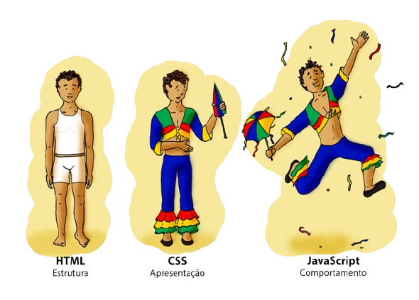
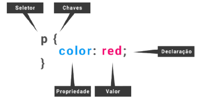

Alunas: Larissa Almeida e Maria Eduarda Teixeira Arruda
O CSS define como os dados são apresentados no navegador. Ele controla o visual de um documento HTML — como fontes, cores, margens e layout.
Sigla: Cascading Style Sheets (Folha de Estilos em Cascata).
Separar o conteúdo (HTML) do design (CSS), tornando os sites mais organizados, flexíveis e acessíveis.
Isso facilita a manutenção e o uso do mesmo conteúdo em diferentes formatos (tela, impressão, leitores de voz etc.).
O World Wide Web Consortium (W3C) é uma organização criada por Tim Berners-Lee em 1994. Ela define padrões e boas práticas para garantir uma web acessível e funcional para todos.
Onde, diretrizes e recomendações do W3C informam aos desenvolvedores as melhores práticas para a criação de sites e sistemas, resultando em uma web mais eficiente e de alta qualidade.
Os padrões abertos e baseados em consenso do W3C previnem que uma única empresa ou fornecedor domine as tecnologias da web, promovendo um ecossistema mais competitivo e saudável.
O W3C desenvolve diretrizes, como as WCAG (Web Content Accessibility Guidelines), para tornar a web acessível a pessoas com deficiência, promovendo a inclusão digital.
Validar o código garante que o site funcione corretamente, evitando erros, bugs e falhas. É essencial para oferecer uma experiência segura e de qualidade ao usuário.
Seletor Um seletor de classe é uma maneira de selecionar elementos em uma página da web com base em sua classe HTML associada. → Propriedade Uma propriedade CSS é uma característica (como a cor) cujo valor define o aspecto de como o navegador deve exibir o elemento. → Valor um valor é a configuração que determina como uma propriedade específica será alterada em um elemento
Exemplo:
Podemos aplicar o mesmo estilo para h1, h2 e h3 no CSS agrupando os seletores com vírgulas.
O CSS é essencial no desenvolvimento web moderno — ele dá “vida” e beleza às páginas, garantindo acessibilidade e uma boa experiência de navegação.